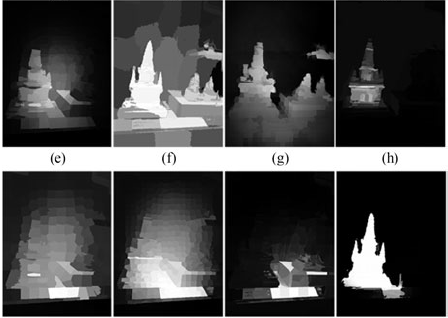
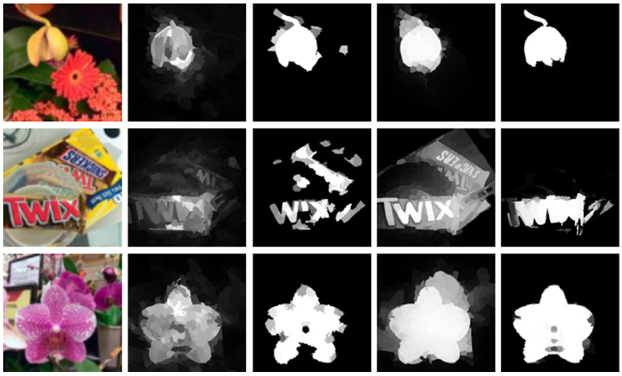
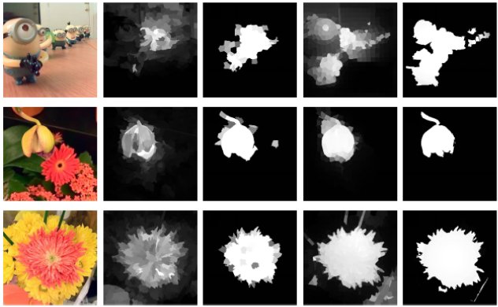

Anzhi Wang（王安志）Ph.D from Sichuan UniversityEmail: andyscu@163.com Baidu Scholar • Github • Linkedin • Zhihu Academic interest: CV, PR, ML,DL, VR, GANs, Fractal Geometry and Graphics. |
Biography
• I obtained the Ph.D. degree in Computer Science and Technology from College of Computer Science, Sichuan University, Chengdu, China, advised by Prof.Minghui Wang.• I received the B.S. degree in Information and Computing Science from school of science, LanZhou University Of Technology, LanZhou, China. and the M.S. degree in Computer application technology from Computer School, China West Normal University, Nanchong, Sichuan, China. advised by Professor Mingdong Li.
• I have experience in Image and Video Processing(3+ years), Computer Vision and Object Detection(3+ years), Fractal Geometry and Graphics(6+ years),and Virtual Reality(8+ years).
• I currently serve as a Lecturer at School of Computer Science and Technology, Southwest Minzu University. My Address: School of Computer Science and Technology, Southwest Minzu University. #16, South Section, 1st Ring Road, Chengdu, Sichuan, China, Post Code 610041.
• My research is on computer vision and machine learning, particularly I am interested in the salient object detection and the research on Unsupervised Learning and Generative Adversarial Networks.
Updates
[2017/09/15] Soon coming ......Selected Publications
 |
Anzhi Wang, Minghui Wang. RGB-D Salient Object Detection via Minimum Barrier Distance Transform and Saliency Fusion. IEEE Signal Processing Letters, May 2017. [PDF][Paper Online][Saliency map] |
 |
Anzhi Wang, Minghui Wang, Xiaoyan Li, Zetian Mi, Huan Zhou A Two-Stage Bayesian Integration Framework for Salient Object Detection on Light Field. Neural Processing Letters, April 2017. [PDF][Paper Online][Saliency map] |
 |
Anzhi Wang, Minghui Wang, Gang Pan, Xiaoyan Yuan Salient object detection with high-level prior based on Bayesian fusion IET Computer Vision, March 2017. [PDF][ Paper Online][Saliency map] |
| Click here for the full publication list |
Frequently-used Softwares
Related Jourals
Related Conferences
Useful Links
- CVHP
- Computer Vision Laboratory of ETH Zurich
- Princeton Graphics Group
- VGG of Oxford
- CSAIL of MIT
- updating ......
Honors
Professional activities
- Journal reviewer for Multimedia Tools and Applications(MTA).
- Journal reviewer for Neural Processing Letters(NPL).
- Journal reviewer for Advances in Multimedia(AM).
Talks
Media coverage
Collaborators
Personal interests
- Sports including Basketball, Climbing and Swimming.
- Amusement including music, movies, Talking with friends, etc.